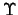
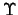
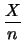
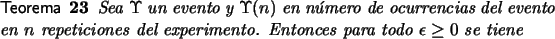
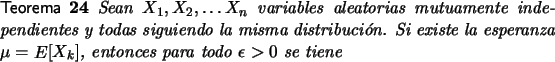

Leyes de los Grandes Números
Para poner en contexto las implicaciones de este teorema es importante revisar las siguientes observaciones.
Dado un
experimento con espacio muestral  , para un evento
 se ha indicado que si se hacen n repeticiones del
experimento y se nota que en esas n repeticiones del
experimento ocurren
(n) veces el evento ,
intuitivamente se define la probabilidad del evento por
, para un evento
 se ha indicado que si se hacen n repeticiones del
experimento y se nota que en esas n repeticiones del
experimento ocurren
(n) veces el evento ,
intuitivamente se define la probabilidad del evento por
Sin embargo, como ya hemos apuntado antes esta definición deja abiertas una serie de preguntas. Por ejemplo si aceptamos definir la probabilidad como el valor límite de estos cocientes entonces la definición se complica. Primero que todo, qué garantiza que ese límite existe, segundo esta definición no es operacional en el sentido de que no es posible repetir infinitamente tal experimento. Estudiaremos la ley de los grandes números que nos ayudará a precisar un poco mejor el sentido de
Simplificando un poco el problema, cada una de las repeticiones del experimento que se realicen en el contexto citado puede verse como un ensayo de Bernoulli donde el éxito coincide con la ocurrencia de . Así el número de éxitos X en los n ensayos del experimento es una variable aleatoria binomial en la cual la probabilidad de éxito es un valor desconocido p. Para esta variable sabemos que la media es np y la varianza es np(1 - p) (teorema 15).
Si consideramos la variable aleatoria Y = X / n es muy sencillo
demostrar que la esperanza de Y es
np/n = p y que la varianza
es
(np(1 - p))/n2 = p(1 - p)/n.
Aplicando la desigualdad de Chebyshev a Y con
t =  obtenemos:
obtenemos:
|
P - p |
(6.4) |
Es decir el límite (6.3) existe o dicho en palabras
algo más simples dada cualquier precisión  se puede
encontrar un valor n de manera que el cociente éxitos entre
el total de ensayos esté tan cerca del valor p desconocido
como queramos.
se puede
encontrar un valor n de manera que el cociente éxitos entre
el total de ensayos esté tan cerca del valor p desconocido
como queramos.
En cierta forma esta última desigualdad da legitimidad al proceso estadístico que se ha citado en la definición (10), pues garantiza que el proceso descrito en esta definición en realidad converge al valor de la probabilidad del evento.
Por supuesto que no resuelve en forma simple el problema operacional de saber cuál debe ser el número de repeticiones del experimento necesarias para obtener aproximaciones precisas de la probabilidad buscada. Se puede utilizar la desigualdad de Chebyshev para obtener aproximaciones del valor de n pero el teorema del límite central, que abordaremos en la sección siguiente será de mayor utilidad en ese sentido.
Las conclusiones que se han obtenido hasta ahora se resumen en el siguiente teorema conocido como una forma débil de la ley de los grandes números [2].

|
|
(6.5) |
Paralela a la la forma débil de la ley de los grandes números existe una generalización que se llama la Ley de los grandes Números cuya justificación está fuera de los objetivos de este curso [6] y se enuncia en el siguiente teorema:

|
|
(6.6) |
Dicho en otras palabras la probabilidad de que el promedio
Sn/n difiera de la esperanza menos que un  cualquiera, tiende a uno.
cualquiera, tiende a uno.